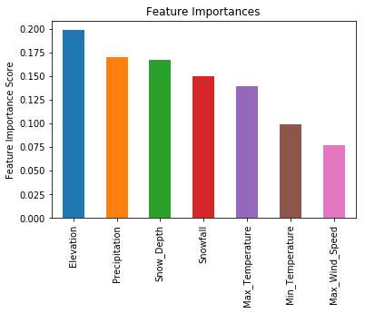

I enjoy skiing in the backcountry. The conditions that are ripe for an avalance are very often related to the current weather conditions. Because of this I decided to build a model that indicates whether or not the current conditions are likely to cause an avalanche.
The data came from the observations hosted at the Utah Avalanche Center's website, I joined this data along the date with data from the NOAA Alta Guard station. The main concerns regarding this data are that the avalanche observations are self reported, this could cause events to be missed. For example, on days in which the avalanche danger is considerably high, no one may report the occurences of avalanches, because no one is in the field. There are other potential issues with self reported data, for example the reporter may get the elevation or other feature incorrect. All in all, this is a toy model and should only be used to provide additional information.
I tried various different models, settling on a gradient boosted model. The final model was trained on 3857 observations. The results of the model's performance on a hold out test set are below:
The Model's accuracy is 0.9003, the AUC score is 0.9544. This means roughly that if we randomly selected an event in which an avalanche occured the model has a 95% chance of rating this event as an avalanche over a non-avalanche event.
| Precision | Recall | F1 Score | Support | |
|---|---|---|---|---|
| No avalance | 0.88 | 0.80 | 0.84 | 247 |
| Avalanche | 0.91 | 0.95 | 0.93 | 525 |
| Micro Average | 0.90 | 0.90 | 0.90 | 772 |
| Macro Avgerage | 0.89 | 0.87 | 0.88 | 772 |
The gradient boosted model was chosen over others based on the micro averaged F1 score and the high recall for the avalanche class. I wanted a model that is conservative in the sense that if there is any indication of conditions in which there could be an avalanche, it flags it as one.
Not suprisingly the top features are elevation and precipitation, followed by snow depth and snow fall. This is interesting because it provides additional evidence that it is not necessarily about how much "snow" falls, it is about how much the snow was loaded. I tried some engineered features, such as snow water equivalent as well as features pertaining to how much snow/weight has been added, non of which provided additional information to the model (and were dropped).
This model definetly could be improved by feeding it a sliding window of previous weather conditions. If this were the case, I can imagine that wind speed would play a more prominent role. I dropped aspect from the feature list, because so many observations of avalanches occure on Northerly aspects that it was providing inaccurate predictions. But I do think the model might have some improvement if the aspects were rolled up into 4 features, North, South, East, and West. Lastly, when I have the time I'd like to explore day of year as a feature as well. If you are interested in exploring any of this please do not hesitate to contact me!
To do: summary of model simulations. Also deploy model as AWS lambda to improve performance?